Hexapod v1 · 1st year · Feb – Oct 2024
From a wire mess
to first steps
18 servos, six legs, a lot of jumper wire. Inverse kinematics written from scratch, tuned until it stood up and walked across the lab.
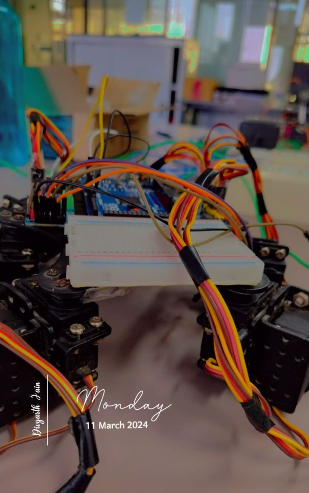
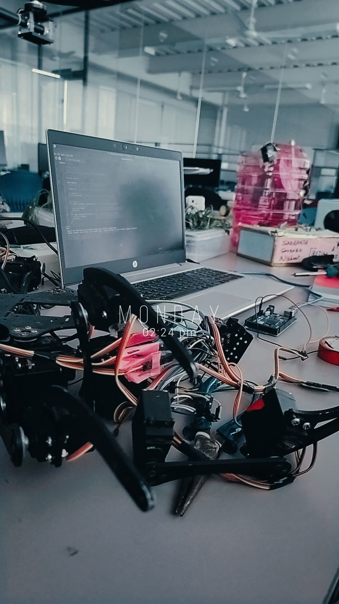
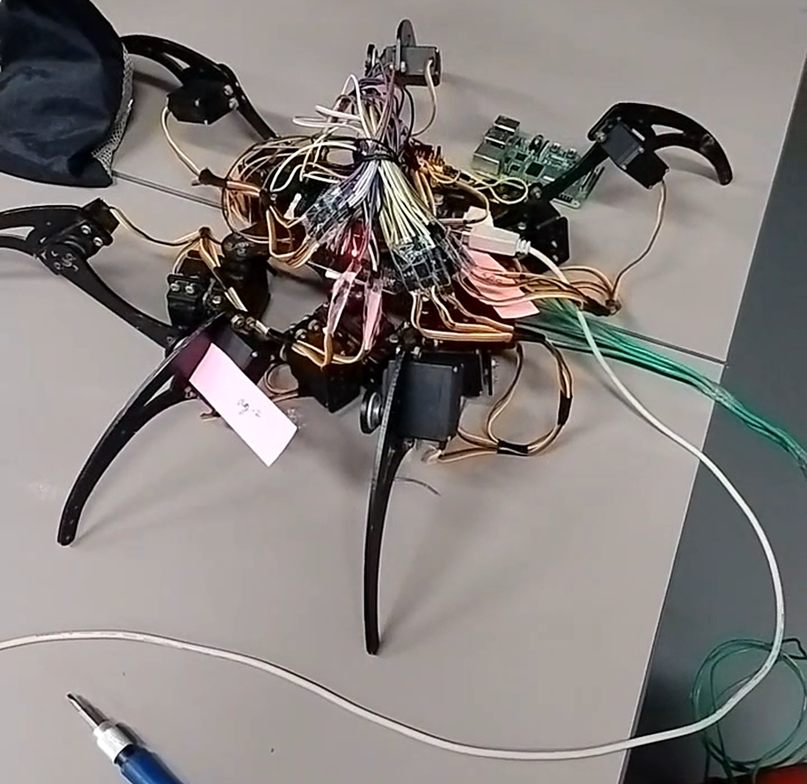
Hexapod v2 · Dec 2024 – Aug 2025 (approximate)
Less spaghetti,
more spider
Second build, done properly: a printed frame, split power, a heads-up display and an Xbox controller. Originally Android-based open-source hexapod firmware, ported to run on an ESP32 plus an RP2040, with smoother gaits added on top.
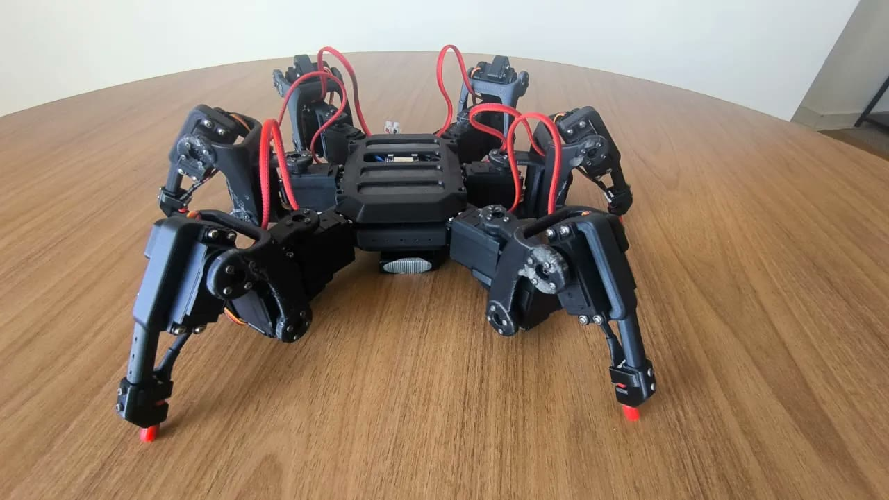
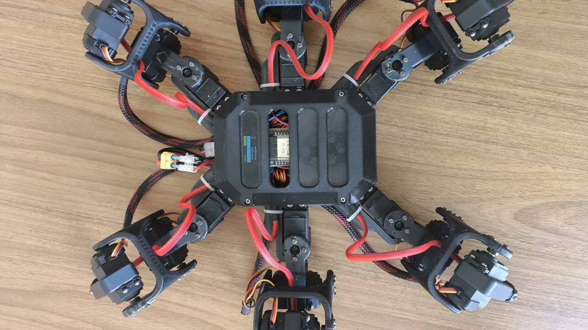
PCB design · EasyEDA + KiCad
Boards I
designed
A 4-layer ESP32-S3 development board built to JLCPCB's design rules, and a six-servo driver board that does more than move joints. It measures every servo's angle and motor current and streams both back to a Raspberry Pi, so the robot can sense load, contact and stalls, not just position.
Prometheus S3
4-layer ESP32-S3 dev board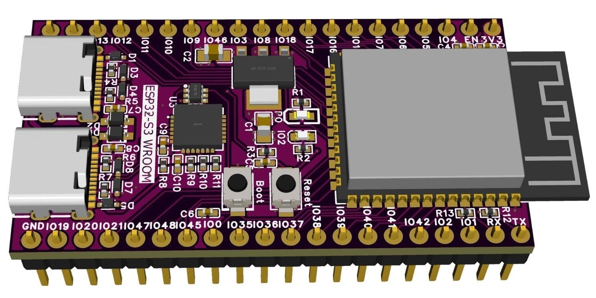
Prometheus S3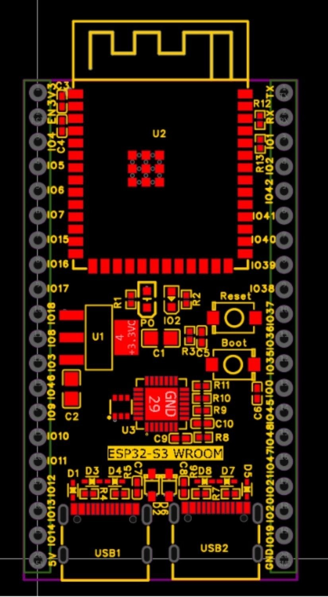
Layout · 4 layers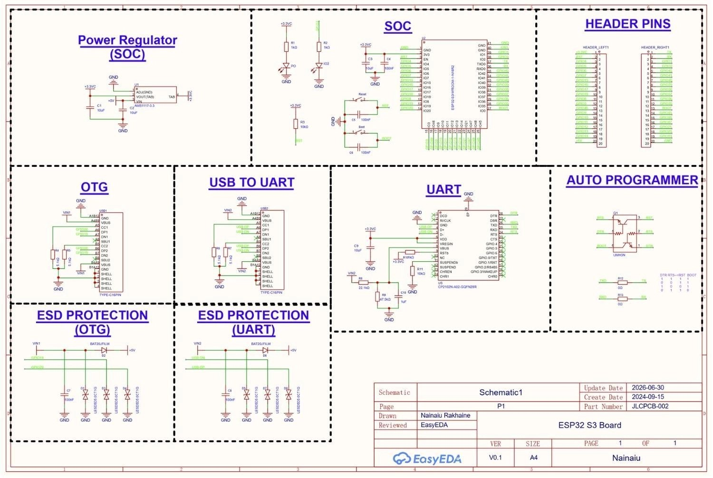
SchematicSix-servo driver + sensor feedback
KiCad 10 · schematic Rev 3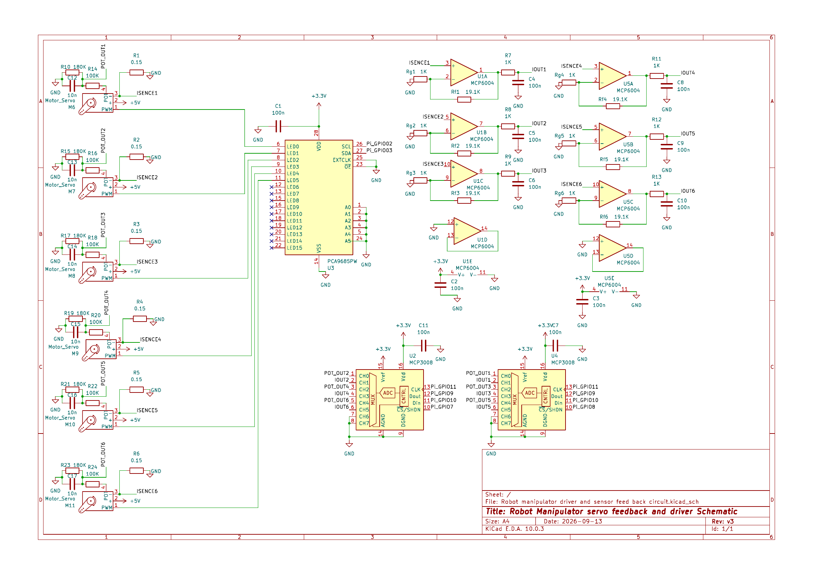
Schematic Rev 3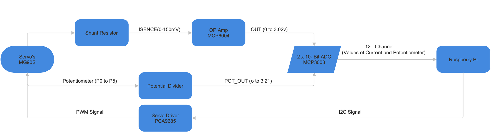
Capstone · world models · 2026
A world model
that fits on a Pi
A world model learns how the world behaves, so a robot can imagine what an action will do before it moves. I'm taking a JEPA world model (LeWorldModel, about 15 M parameters), quantizing it to run on a Raspberry Pi 4B, and letting it keep learning on the robot when the world changes.
Inside the world model
Encode
Camera frame → a compact latent state: 192 numbers that describe the scene.
Predict
Latent state + action → the next latent state. Chain it forward and the robot imagines the future.
Plan in imagination
Try many action sequences inside the model, keep the one whose imagined outcome lands nearest the goal.
Why latent space: it predicts compact features, not pixels, which is what makes imagining cheap enough for a Pi.
Keeps learning on the robot
Imagined vs real
Every step, the prediction is checked against what actually happened.
Gate
When the model is right, nothing is trained. Compute is spent only when the world shifts.
On-board update
Only a small slice of the predictor is retrained on the robot: 1.33 M of 10.79 M weights.
Where it plugs in · the robot stack
Planner · VLM
Goal + camera → subgoals
Policy · VLA
Subgoal → arm motion
Controller
Joints → ST3215-HS servos
The world model sits beside all three: it checks each step against reality and is the only part that learns on the robot.
Target: Raspberry Pi 4B · 8 GB
That is roughly 40–110 imagined steps per second before any quantization. Full-precision (fp32) estimates from a compute count, scaled to an assumed 3–8 GFLOPS on the Pi's four Cortex-A72 cores. Not measured on the board yet.
Why quantize
- Memory
- Not the limit: the predictor is ~43 MB in fp32, the Pi has 8 GB.
- Compute
- The limit: seeing a frame and learning from it each take up to a second.
- Measure the real timings on the Pi 4B.
- Quantize the encoder and predictor to INT8 and check prediction quality holds.
- Keep learning on the small slice only, so updates fit between control ticks.
Research · chips
Below the
transistor
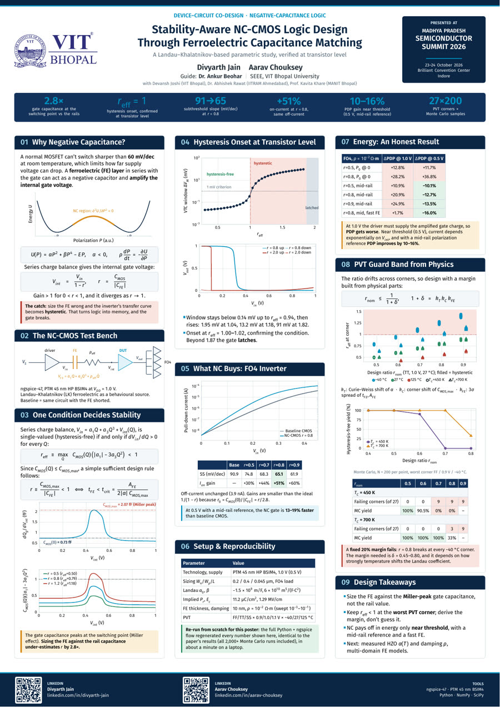
Paper accepted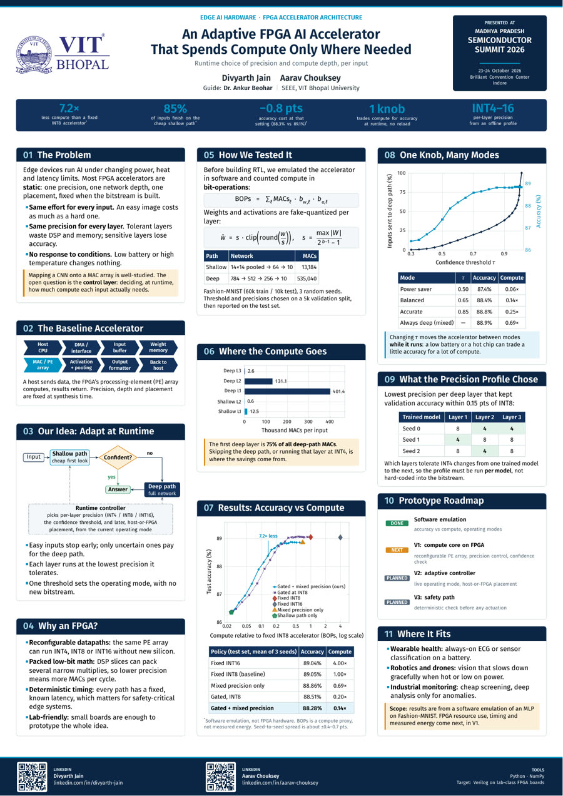
PosterAccepted · to appear
Stability-Aware NC-CMOS Logic Design Through Ferroelectric Capacitance Matching: A Landau–Khalatnikov-Based Parametric Study
A. Chouksey, D. Joshi, D. Jain, A. Beohar, et al. · Paper ID 2381
Experience · 2 internships
Shipping AI
to real users
5 May – 6 Jul 2026 · Indore
AI Product Intern · Multi-agent AI
QSC Solutions · project: An Autonomous Multimodal Multi-Agent Framework for Applications in Government and Commercial Sectors
- Worked on a multilingual AI avatar that answers callers in their own dialect, and an autonomous, personalised voice-outreach system.
- Fine-tuned the language models behind it, including parameter-efficient fine-tuning.
- Explored how multimodal, multi-agent systems apply across government and commercial use cases.
1 May – 16 Jun 2025 · Indore
AI Product Intern · Video Personalization
QSC Cloud, a subsidiary of QSC Solutions
Worked on AI Video Avatar, a product that turns one message into personalised videos for mass communication.
- Integrated AI models into the video pipeline.
- Improved the personalization logic behind each avatar video.
- Helped build the machine-learning training module.
- Turned usage data into insights that shaped the product.
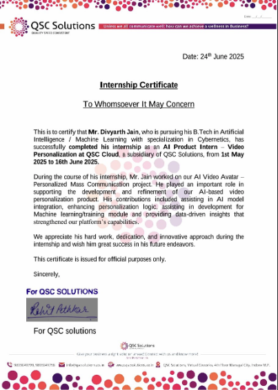
Certificate